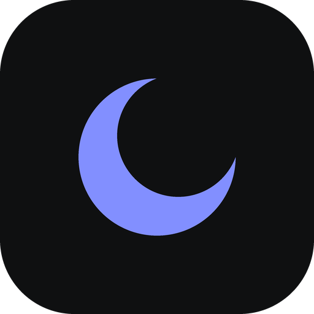

副廠的安卓車機，亮度調到最低，晚上開車還是太刺眼。試過幾個調暗的 App，不是設定太複雜，就是廣告太多。
我只需要一個開關、一條拉桿。所以車機調暗只做這件事：在畫面上蓋一層可以調深淺的暗色，按鈕和地圖照常能點。

副廠的安卓車機，亮度調到最低，晚上開車還是太刺眼。試過幾個調暗的 App，不是設定太複雜，就是廣告太多。
我只需要一個開關、一條拉桿。所以車機調暗只做這件事：在畫面上蓋一層可以調深淺的暗色，按鈕和地圖照常能點。
在整個畫面上蓋一層暗色，暗度每 5% 一格，自己拉到舒服的程度。導航、音樂等其他 App 照常使用。
為車上設計：字大、按鈕大，瞄一眼、點一下就好。寬螢幕左右並排，窄螢幕上下排。
像手機的夜燈：到了開始時間自動變暗，結束時間自動恢復；中途想手動開關也可以。不想用可以關掉。
車機重新開機後，會照上次的設定自己啟動，不用每次上車再開。
調暗中下拉通知列就能關掉，不用回到 App。
App 沒有網路權限，不收集任何資料。
Android 12 起規定：蓋在其他 App 上面的畫面如果太不透明，底下的 App 就收不到觸控（防止惡意程式遮住畫面騙你點）。上限由系統決定，通常是 80%，App 會顯示你這台的上限。
所以請先把車機自己的亮度調到最低，再用車機調暗補。
調暗的做法就是在所有畫面上面蓋一層暗色，Android 規定這要使用者自己打開這個權限。App 只用它來蓋這一層，這一層不會攔截你的觸控。
Android 13 以上、可以自己安裝 App 的車機都能裝，手機和平板也可以。這個 App 是為 FYT 系統的副廠車機（Android 13、2000×1200）開發的；其他品牌的車機沒有測過，有些車機會限制背景執行或開機自動啟動，遇到問題歡迎來信。
原廠車機大多不能自己安裝 App；Android Auto、CarPlay 是手機投影的畫面，也沒辦法用。
調暗的時候要有一個常駐的服務維持那層暗色，通知列會看到「車機調暗」的通知。關掉調暗、也沒開「依時間自動」時就不需要它。
因為不是從 Google Play 安裝，Android 會請你允許「安裝未知的應用程式」。App 的原始碼是公開的，可以自己檢查。